操作系统 - 为什么linux是文科生的生产力工具
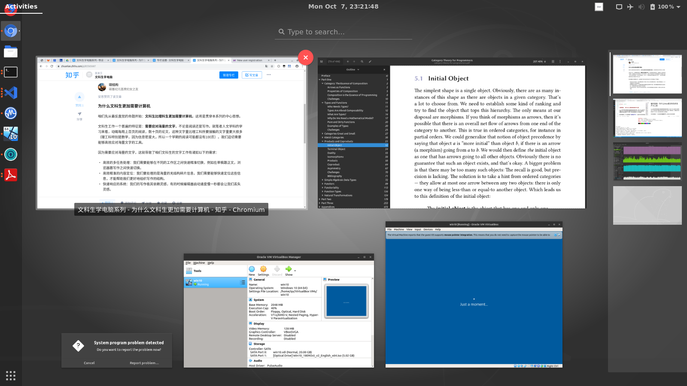
本文是“文科生学电脑”系列中的一篇文章，关注本专栏，感受一名艺术生眼中的计算机世界。
Linux在我们眼中是属于服务器领域的操作系统，那么为什么我们非计算机从业人员有必要了解甚至将其当做日常主力系统？原因无他，只要我们的目的是生产力工具，那么就有转投linux的理由。
任何领域都有一个共性那就是追求生产力，因此本文的目的就是:
- 初级阶段：阐述linux如何能成为咱们文科生的生产力工具。
- 高级阶段：linux在有的时候甚至对文科生更有用，也就是说，为文科生专有的生产力需求助力。
文科生入坑linux的几大理由
linux对文科生更有用
本文接着上一文章的中心思想，试图说明，在很多情况下，linux系统或许对文科生更加有用：文科生的工作需要应对很多结构杂乱的信息（例如在构思论文的阶段），而linux更加可以胜任这些工作。
对比文科理科，我们可以立刻意识到：理科注重学科的体系架构，而这往往会让信息内容简洁有序。例如理科巅峰的数学，因为其公理系统的结构，导致了数学的教科书往往都极其简洁。文科的课（例如笔者曾经上过的人文课）每周的阅读往往是几百页，论文数十页，而理科例如数学往往一个学期只需要阅读不到一百页的内容。
这也就导致咱们文科生更加迫切需要趁手的生产力工具来让我们应对这些海量的文字信息。
linux系统各个细节都充满着程序员精心设计的生产力，而生产力不分领域，计算机领域的生产力往往也是咱们文科所需要的生产力。例如，我们后文将会提到：
- 多任务管理，比如windows直到windows 10才跟进的“虚拟桌面”。
- 用简单的脚本自动化繁琐的任务，对文科项目一样有用。
稳定安全 - 我们掌控工具，而不是被工具折腾
好的工具需要让我们感觉不到它的存在。我们掌控工具，而不是被工具折腾。
Windows系统的臃肿从很多程度上都跟生产力背道而驰：
- 用久了会变卡，因此需要重启，并且最终需要重新装系统。
- 强制自动升级会给我们很多不需要的功能，并且增加系统不稳定性，以至于“如何关闭自动更新”都成了热门问题。
- 强推图形界面在某些时候反而会降低生产力：原本可以敲几个命令完成的事情，在图形界面中需要找到程序，打开程序，然后用鼠标点点点。
在linux的世界里，重装系统跟重启都是稀有品。因为 跑服务器的系统，重装系统跟重启都算是运维灾难，所以真正可以做到以年为单位的uptime（不关机时间）。
这些例子看上去只是细节，但是对生产力非常重要。例如，连续10年不关机就可以保证无中断的工作状态，思路不会因为关机开机重新打开各种程序而终端。
接触了linux系统，我们就可以彻底告别“重装系统”，“自动更新蓝屏”，“长时间开机变卡”这些问题。这些不是linux的优势，而是电脑本来应该有的样子。 不用折腾电脑应该是一项基本权利(right)，而不是特权(privilege)。好的系统根本不应该需要我们装什么电脑管家，垃圾清理等软件。
在安全方面，windows让自家的bitlocker全盘加密成了专业版才有的奢侈品，然而在linux中luks全盘加密只是基本配置。在其他方面也不用过分担心安全漏洞，我们要这么想：因为是跑服务器的系统，所以如果有系统级的漏洞，那么首先遭殃的是全球大部分的企业。
美学考量：赏心悦目的界面和系统
生活中仪式感很重要，干净清爽的系统就像是干净的书桌一样，可以极大提高我们的生产力。
作为文科生，我们对审美有不懈的追求。windows从很多方面都跟好的审美背道而驰。
例如，前文所说臃肿的系统让我们总会隐隐感觉在一个堆满垃圾的书桌上工作，虽然说“又不是不能用”，但是依然会在潜意识上影响我们工作的效率。
而图形界面也是，windows丑陋的字体渲染是很多人转向mac阵营的一大原因之一。然而mac溢价过高是一回事（彻底失去本屌丝这位低端用户），另一方面，从某种角度来说，linux成本更低然而体验甚至可能更好。
反过来看linux，通过简单的定制（现在的gnome 3.34甚至都不需要定制），我们可以做到连终端都充满文艺气息和逼格，而不是windows百年不变的“命令提示行”风格。我们可以恍然大悟：原来理工科也可以有跟文艺领域逼格一样高的审美。
有了清爽的电脑，自然可以将精力放在工作本身上。
搭上时代的东风 - 拥抱开源，拒绝垄断
从最近华为笔记本下架微软商店，以及推出linux版本的笔记本也可以看出来：拥抱开源就是爱国。拥抱开源，就等于拒绝垄断以及大企业通过后门和霸王条款侵犯用户隐私。拒绝垄断，受益的则是个人以及国家。
百度垄断，因此可以说出“用户不在乎隐私”这种话。windows 10因为流行敏捷开发，所以把用户当成测试部门小白鼠。而开源软件则更大程度上避免了店大欺客的情况：如果有后门，那么根本藏不住，如果有霸王条款，那么用户可以自己拿源码去魔改。
现在这个时代，可以说是开源精神最好的时代之一：开源精神的正能量，用户个人的利益，跟爱国主义完美汇聚在了一起。
戒游戏
简而言之，如果我们没有玩游戏或者windows上特定软件的需求，那么linux可以说是全方位胜出。
但我们可以反过来想，linux可以帮我们戒游戏，一是因为游戏支持度低，二是因为一不小心linux系统本身就成了一个游戏。
不折腾 - 选择发行版
入门linux面临的第一个问题就是选择发行版，我们要避免的第一件事也就是在这一步骤浪费任何时间。
linux因为开源而分裂内卷：有着五花八门的“发行版”。而不同发行版的信徒之间互骂，谁也看不起谁，整个就一大型邪教互殴现场。
这也是入门linux最大的一个陷阱：我们很容易就从学电脑变成折腾。两者的区别在于：折腾降低生产力，学电脑提高生产力。折腾在乎的是无关紧要的小事，例如美化或者是为了换发行版而频繁重装系统。
咱们文科生每天有几十页的论文要写，几百页的阅读要做，没有时间折腾。所以入坑linux第一点要记住的就是：一切所作所为都只为完成文科的工作这一个目标服务，不做任何无关紧要的折腾。
因此选择发行版也是一样的道理，各种五花八门的选择中，不要追求个性，选一个用户最多（因此出问题能更好找答案），最平庸的发行版。
笔者选的是鄙视链最底层的Ubuntu 18.04 LTS，然而我却并不在乎：咱们文科生没有必要凑linux发行版邪教斗殴的热闹。
大家如果想选其他的，可以考虑：
- Manjaro
- Deepin
加上ubuntu，这三者都是追求开箱即用，不炫技。
本系列wlog用ubuntu来举例，但是不同的发行版其实大同小异。
壮士断腕 - 拒绝双系统
利益相关：本人艺术生一枚，经过亲身实践，使用linux单系统整整一年，感觉良好。
我们不是学习linux，而是用linux。
入门linux另外一个阻力就是，我们往往只是在虚拟机里面跑linux或者是装双系统。然而这样就相当于潜意识里先假设了“linux不靠谱”，所以给自己留后路。这种心态会让我们无法真正将linux当做主力的生产力工具。这跟学习语言是一个道理：不完全沉浸在一个语言环境里那么很难真正学会一个语言。
主力系统跑linux跟出于学习目的在虚拟机或者双系统里面跑linux的区别不仅仅在于性能，还有心态。我们要做的就是全面转向linux而不仅仅是在虚拟机里面体验。我们可以反过来，大部分时间用linux，然后在偶尔需要windows的时候在虚拟机里面跑windows。
安装系统
现在我们就要以文科生的角度开始探索linux。
安装linux系统在现在9102年非常简单，只需要下载系统镜像，刻录到启动u盘上，然后从u盘启动，无脑点“下一步”。
第一步：下载系统镜像
前往官网https://cn.ubuntu.com/download直接下载18.04.3 LTS镜像。
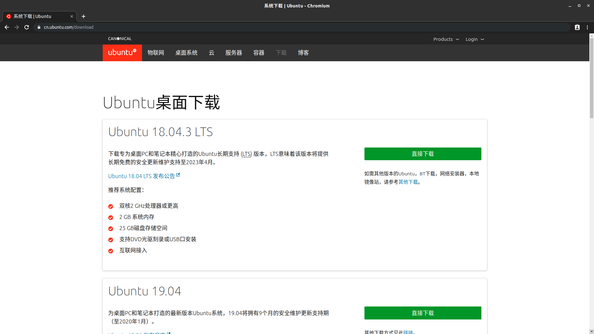
第二步：制作启动盘
用例如rufus这种启动盘制作工具将下载的镜像刻录到u盘中
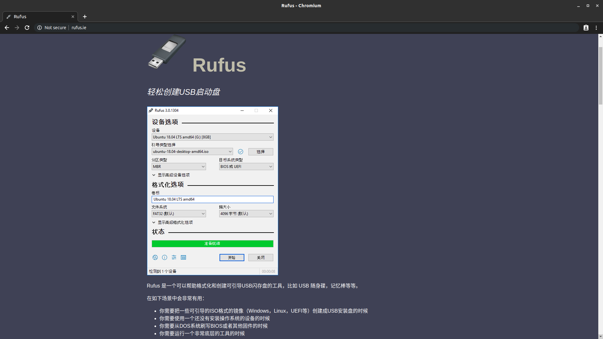
第三步： 从u盘启动
每个电脑都不同，但基本上都是这个步骤：
- 关机的时候接上u盘
- 在开机出现开机图标的时候打断（屏幕上往往会写，比如回车或者是F12）
- 打断之后选择启动设备，选择usb设备
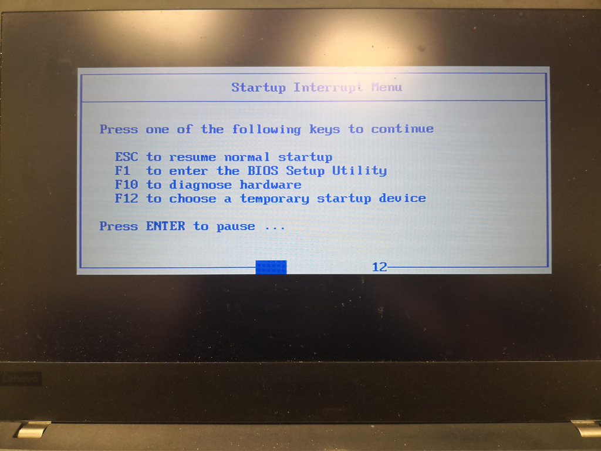
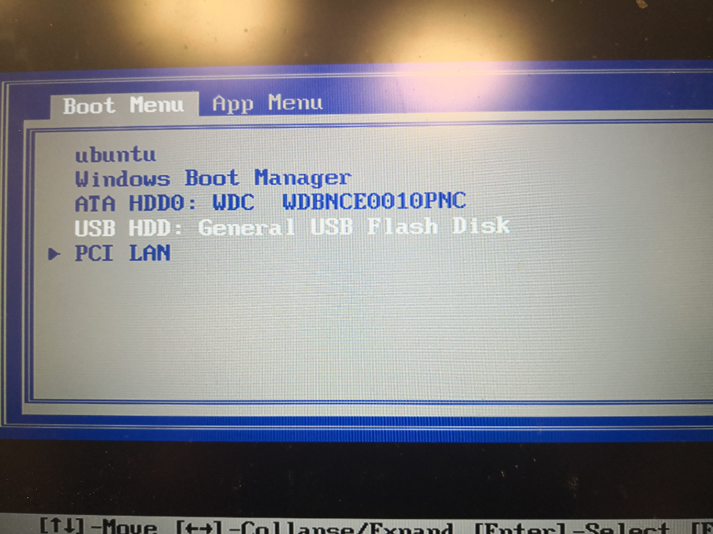
跟着安装指引往前走
这一步会清空硬盘中的所有数据！这一步会清空硬盘中的所有数据！这一步会清空硬盘中的所有数据！
根据上文所说，学习linux最好的方式就是拒绝双系统，因此我们选择只装一个系统。
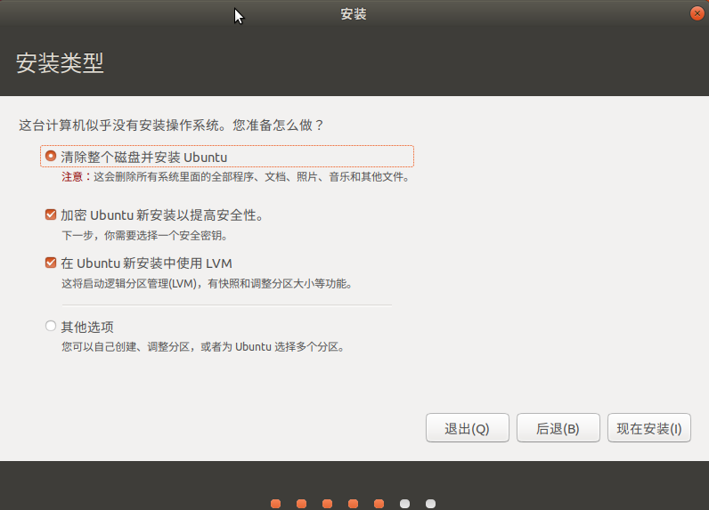
在这一步，我们可以设置全盘加密以及lvm，这两个功能是linux的杀手锏功能：
- luks全盘加密：在不加密的情况下（例如windows 10不开启bitlocker），即使我们设置了用户密码，我们只要硬盘拿出来单独读取，还是可以一览无余看到所有的内容，因为硬盘本身的数据并没有加密。而全盘加密则可以保证硬盘内的内容在没有开机密码的情况下只是一团乱码。这样可以保证电脑如果丢了，敏感信息也不会被盗。
- lvm：linux的杀手锏之一就是文件系统，lvm的主要作用就是动态调整分区。比如，我们的笔记本有一个自带的硬盘和一个硬盘槽，但是装系统的时候硬盘槽是空的。在以后买了新的硬盘之后，可以直接给系统扩容：将新的硬盘加入到lvm池子中，这样看上去两个硬盘就合并成了一个大的硬盘。
Ubuntu的安装引导极大简化了luks全盘加密和lvm复杂的配置，让我们可以直接无脑点下一步即可。
配置系统
接下来我们就做最基本的系统配置，让系统基本可用。
首先我们先要了解一下linux中安装软件跟windows不一样的地方：windows是粗放的软件安装机制，我们从各个网站下载安装包，然后双击安装，软件安装包几乎可以为所欲为，自己指定安装位置，随意污染注册表，导致系统越用越臃肿。
linux所流行的是统一的包管理机制，可以被看做苹果app store的前身：一个统一的包管理器来负责所有软件的安装和注册。不同的发行版有着不同的包管理器，其中以apt，yum以及pacman最为流行（最近还有各种例如snap/flatpak/appimage等格式），不过这些都是无关紧要的细节。
（这并不是说linux就绝对安全，我们一样可以作死下载各种野包或者添加野软件源）
ubuntu主要用的是apt包管理器。从下图我们可以看到安装的一个例子：
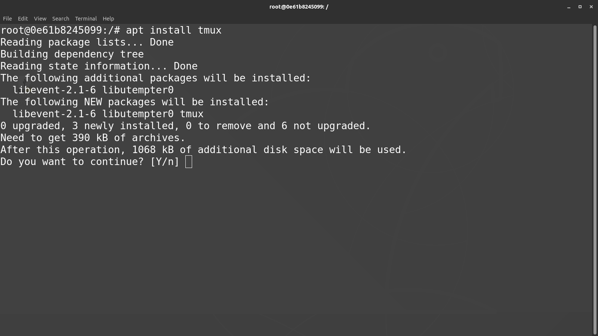
包管理器对软件控制的精确程度令人发指：在windows中，我们永远不知道一个程序安装包做了什么，在删除的时候有没有残留什么垃圾文件。而linux中的包管理器对程序占用空间的控制精确到字节级别，这也是为什么系统不会越用越卡，硬盘空间越来越少的一部分缘故。
浏览器：Chromium
我们实战一下apt这一ubuntu上的应用商店。
首先更新一下软件源：
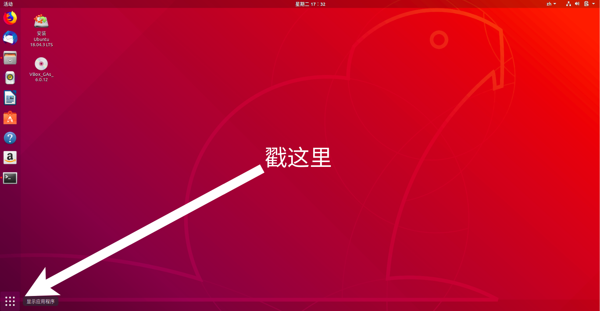
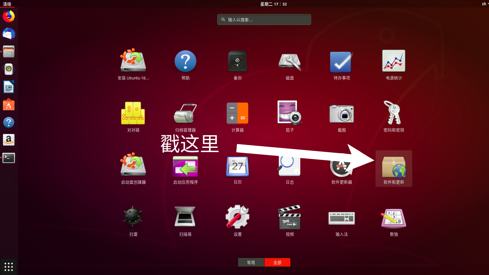
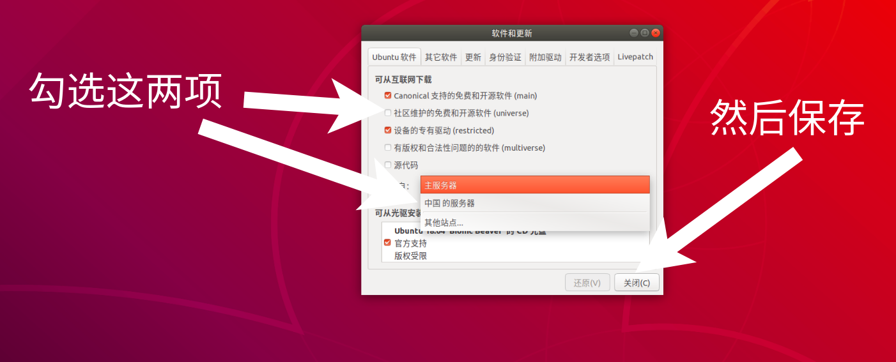
使用快捷键Ctrl+Alt+t召唤出终端（这一快捷键是最常用的一个快捷键，没有之一），然后输入
sudo apt update
（sudo指的是“用管理员身份执行”：super user do）这一指令可以获取服务器最新的软件列表。我们应该看到的是类似这样的进度条：
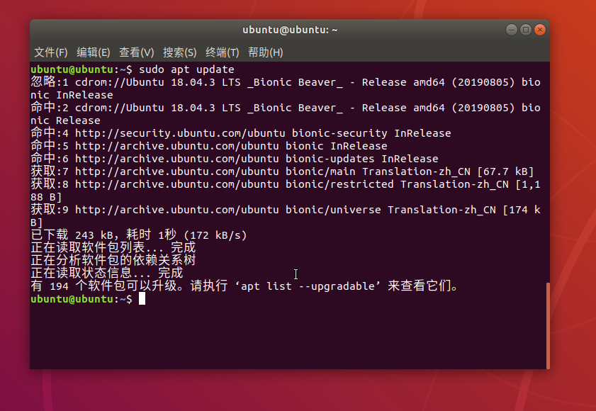
然后我们就可以安装软件了：
sudo apt install chromium-browser
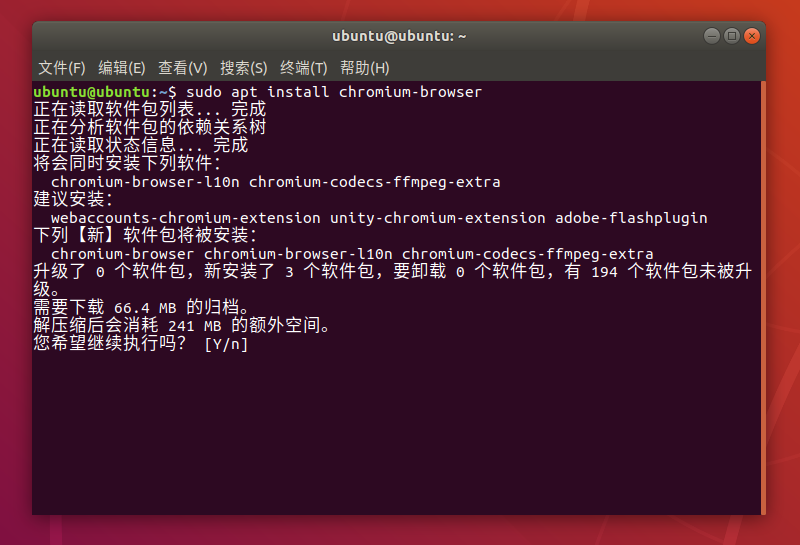
一行命令，就可以一键安装开源版的chrome浏览器。
编辑器：vscode
apt的一个缺点就是软件版本往往很老，并且不全。这时候我们往往就需要去官网下载安装包。
我们用vscode这一例子举例说明如何安装官方源之外的软件。
我们先去官网，直接下载deb格式的安装包：
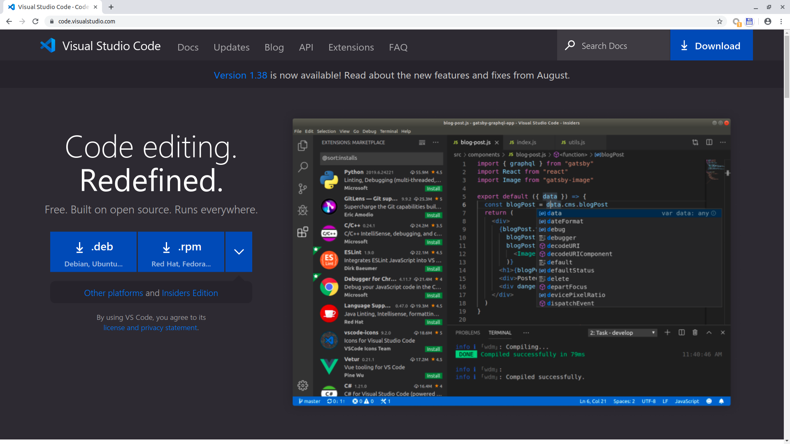
下载完之后，直接双击安装就行。
这种方式安装的deb在后台一样是通过apt这一统一的包管理器来管理，并且往往会将自己加到“非官方软件源”中。因此下次在做
sudo apt update #更新软件列表
sudo apt upgrade #更新所有软件
则会统一更新所有的软件，不需要每个软件都通过自己的方式来更新。